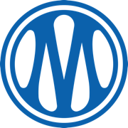

Histoire du club
Fondé en 1899, l'Olympique de Marseille est l'un des clubs historiques du football français. Le club évolue au sein du Stade Vélodrome, son stade emblématique depuis 1937.
Un club populaire
L'OM est connu pour la ferveur de son public, notamment lors des matchs disputés au Vélodrome.
Effectif professionnel (extrait)
Gardiens
Gardien n°1
Gardien n°2
Comment suivre un match
- Consulter le calendrier des matchs
- Réserver sa place en ligne
- Arriver au Vélodrome avant le coup d'envoi
Palmarès

Statut européen : vainqueur de la Ligue des Champions 1993.
Le club compte de nombreux titres de champion de France et de vainqueur de la Coupe de France.